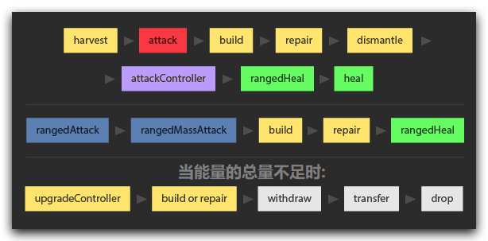

译者注：此章所提及所有的“冲突”及“优先级”都是对同一 creep 而言。有关不同 creep 的冲突，参见“结束阶段”。
不同动作的优先级
对单一 creep 而言，其身体的构造决定了其所能执行的动作（ action ，及蓝色方块标记的左侧栏条目）。虽说您可以创造一个万金油般的 creep ，但它仍不能在同一 tick 中执行所有的动作。下图便是各个动作之间的优先级关联：

如过您尝试在同一 tick 内执行多个有优先级冲突的动作，只有图中更靠右的的会被执行。然而各动作的返回值并不会因优先级冲突而改变。如果动作本身是合乎情理的，那么它总会返回 OK 。举个例子：
// 第一 tick
creep.build(constructionSite); // ERR_NOT_ENOUGH_ENERGY - 报错：能量不足
creep.harvest(source); // OK – 执行成功， creep 收获了能量
// 第二 tick
creep.build(constructionSite); // OK – 执行成功
creep.harvest(source); // OK - 虽然返回值也为 OK ，但由于在同一 tick （上一行）里使用了优先级更高的 [`Creep.build()`](api/#Creep.build)
//所以 [`Creep.harvest()`](api/#Creep.harvest) 实际上被覆盖了，没有被执行。虽说如此，但您却能在同一 tick 内执行多个没有优先级冲突的动作。比如说：
creep.moveTo(target);
creep.rangedMassAttack();
creep.heal(target);
creep.transfer(target, RESOURCE_ENERGY, amountTransfer);
creep.drop(amountDrop, RESOURCE_ENERGY);
creep.pickup(energy);
creep.claimController(controller);上例的动作无一冲突，都能在同一 tick 中被成功执行。
取决于能量的多少，同时使用多个有关能量传输的动作会导致不同的结果
- 如果能量足够有余，那么所有的所有动作都将会被执行
- 否则，优先级规则会介入以解决冲突
同一动作的优先级
值得注意的是，不同动作的执行结果仅和它们之间的优先级有关，与在代码中的的顺序无关。但是对与相同的动作，最后一个才会被成功执行。例如在同一 tick 中：
creep.moveTo(target); // 被覆盖(因为 [`Creep.moveTo()`](api/#Creep.moveTo) 源码中有调用 [`Creep.move()`](api/#Creep.move))
creep.move(RIGHT); // 被覆盖
creep.move(LEFT); // 被执行最终结果是这个 creep 会向左移动一格。
更多
- 请注意，治疗一个满血的 creep 或修复满血的建筑会返回
OK并可能覆盖其他优先级较低的动作。 - 尽管同时使用
transfer（传出）和drop（丢弃）并不一定会产生优先级冲突，您却不能同时执行多个transfer（比如传资源给多个建筑），以此类推。 - 同时执行需要
CARRY部件的不同动作不会产生冲突。但资源的存量并没不会在玩家代码执行过程中被改变。参见理解游戏循环、游戏时间、ticks